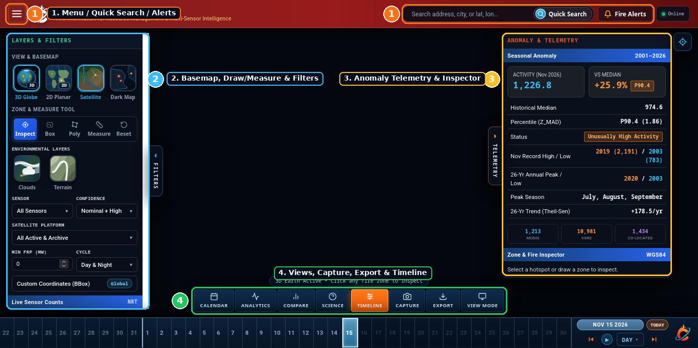
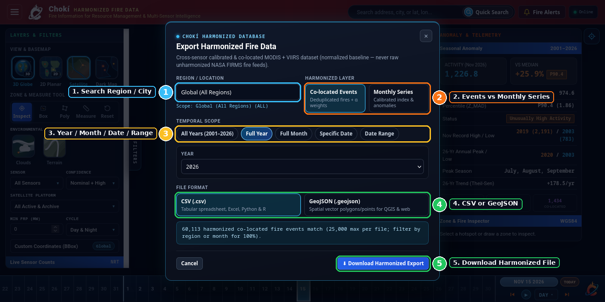
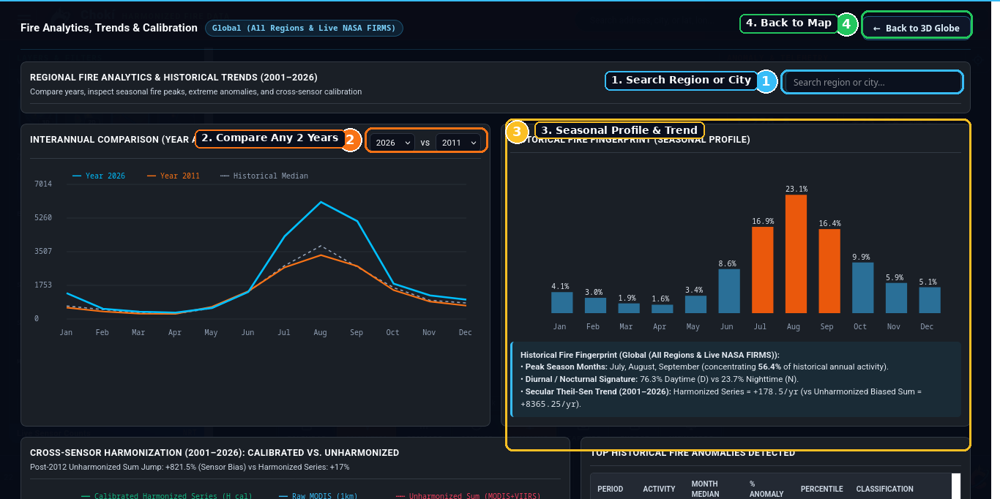

Define exact latitude & longitude bounds (WGS84 decimal degrees) to isolate thermal detections in a specific corridor.
| # | Sensor / Sat | Coordinates | Acquired (Local) | FRP | Conf |
|---|
Cross-sensor calibrated & co-located MODIS + VIIRS dataset (normalized baseline — never raw unharmonized NASA FIRMS fire feeds).
Real-time MODIS & VIIRS perimeter monitoring with Dual-AI false-positive filtering.
Chokí combines a live 3D/2D satellite fire globe with 26 years (2001–2026) of calibrated MODIS & VIIRS analytics. Use the numbered hotspots below to navigate every control:

Click ≡ (top-left) for FIRMS Data API, Fire Alerts & Settings, Tutorials, and FAQs. Type any city, region, or lat, lon in the top search bar or click 🔍 Quick Search to fly the globe there.
Switch between 3D Globe / 2D Planar and Satellite / Dark Map. Pick a tool: Inspect (click hotspots), Box / Poly (analyze custom area), or Measure (geodesic km/mi distance). Toggle real NASA GIBS Clouds & Terrain, or filter by Sensor, Confidence, Platform, FRP, and Day/Night.
Shows your active region's 26-year historical baseline: % vs Median, percentile (Pxx), robust Z_MAD score, Peak Season, 26-Yr Trend (Theil-Sen), and clicked fire details. Pull the SENSORS tab on the right to inspect raw vs. co-located detections.
Open CALENDAR, ANALYTICS, COMPARE, or SCIENCE. Use TIMELINE to toggle the 1–31 day ruler (or click the date pill to change Year/Month/Mode). Click CAPTURE to save the view as PNG/JPG/WebP, EXPORT for harmonized data, or VIEW MODE to hide HUDs.

MX-CHH, US-CAL, BR-AMZ, ES-IBE, AU-NSW, RU-SAK), choose Global (All Regions), or type a custom city to export a local bounding box.Co-located Events (deduplicated fire events with calibration α weights) or Monthly Series (2001–2026 calibrated index, anomalies, Z_MAD, R²).All Years, a Full Year, a Full Month (e.g., Apr 2024 or all Aprils 2001–2026), a Specific Date, or a Date Range in .CSV or .GeoJSON.
Raw NASA FIRMS provides uncalibrated per-pixel thermal detections directly from MODIS (1 km) and VIIRS (375 m). After VIIRS launched in 2012, raw hotspot counts jumped artificially (~+700–820%) purely from finer pixel resolution—not more fires. Chokí removes that sensor jump through spatial effort normalization, co-located deduplication, and 2012–2026 overlap regression calibration before computing baselines or exports.
MODIS Collection 6.1 (1 km): Terra (Nov 2000–present) & Aqua (Jul 2002–present).
VIIRS 375 m: Suomi-NPP (2012–Nov 2026), NOAA-20 / JPSS-1 (Apr 2018–present, 3,040 km gap-free swath), and NOAA-21 / JPSS-2 (Jan 2024–present).
Archive Coverage: Continuous monthly harmonized baseline from 2001 to 2026 plus Near Real-Time (NRT) live detections.
Multiple satellites (Terra, Aqua, NOAA-20, NOAA-21) frequently image the same wildfire within hours of each other. Chokí clusters simultaneous detections within overlapping physical footprint radii and a 6-hour orbital window into a single thermal_event_id, reporting consolidated Fire Radiative Power (MW) rather than summing duplicate passes.
Every month is compared strictly against the historical distribution of that same calendar month across 2001–2026. Instead of mean/standard deviation (easily skewed by one mega-fire year), Chokí uses the Median, MAD (Z_MAD = 0.6745 × (x − median) / MAD), empirical percentiles, and the non-parametric Theil-Sen slope to measure long-term trends robustly.
Click EXPORT in the bottom dock. Select your region or city, choose Co-located Events or Monthly Series (2001–2026), pick a temporal filter (All Years, Full Year, Full Month, Specific Date, or Date Range), and download as .CSV or .GeoJSON. To save a snapshot of the map view, click CAPTURE and select PNG, JPG, or WebP.
Yes. Open the ≡ menu → FIRMS DATA API to visit NASA EOSDIS FIRMS' official Area API documentation. Meanwhile, Chokí caches its shell, API telemetry, and viewed map tiles via Service Worker so emergency dispatchers retain situational awareness offline.
Unlike raw satellite feeds that trigger false alarms on steel mills, gas flares, or bright cloud reflections, Chokí runs a two-stage neural screening pipeline on candidate hotspots before alerting you:
T_MIR), thermal contrast (ΔT = T_MIR − T_TIR), Fire Radiative Power (FRP MW), and diurnal timing.T_TIR < 273 K), coordinate persistence, and solar-glint geometry to veto cloud-edge glare and static industrial flares.15–250 km), minimum FRP threshold, desktop notifications, and audio alarms.Raw FIRMS mixes 1 km MODIS with 375 m VIIRS, creating an artificial post-2012 spike. Chokí calibrates VIIRS onto the 26-year MODIS baseline (H_cal) so 2001–2026 trends remain physically comparable.
One wildfire can trigger overlapping pixels across Terra, Aqua, NOAA-20, and NOAA-21. Chokí clusters coincident passes within Δx ≤ 1.5 km and Δt ≤ 6 h into unique co-located thermal events.
Evaluates whether current activity is statistically abnormal against the 2001–2026 same-month climatology using robust Z_MAD and P0–P100 percentiles.
Filters static gas flares, solar glint, and cloud-edge artifacts using spectral ΔT (MIR−TIR), persistence checks, and automated 15-minute NRT orbital sweeps.
MODIS_NRT, VIIRS_NOAA20_NRT, and VIIRS_NOAA21_NRT (3 transactions per cycle) to screen your monitored perimeter.
A single fire front resolved as 1 MODIS pixel (1 km) splits into 3–6 VIIRS pixels (375 m) and detects cooler sub-pixel fires. Concatenating raw counts creates an artificial +800% jump after 2012.
Simultaneous detections from Terra, Aqua, NOAA-20, and NOAA-21 within spatial footprint overlap and a 6-hour orbital window are clustered into a single thermal event so FRP is never double-counted.
For each calendar month m ∈ {1..12}, Chokí fits a robust transfer function mapping VIIRS counts onto the 2001–2026 MODIS baseline (with R² diagnostics), removing sensor bias while preserving real seasonal variability.
Each month is compared only against the same calendar month across 26 years. Using Median & MAD avoids distortion from extreme mega-fire years. Extreme Anomaly triggers at P ≥ 96 or (Z_MAD ≥ 2.4 & +75%).
Measures long-term fire activity change per year (2001–2026) using the median of all pairwise slopes, ensuring outlier years do not artificially tilt the climate trend.
Combines mid-infrared (MIR ~4 μm) vs. thermal-infrared (TIR ~11 μm) brightness contrast with coordinate persistence and solar-glint geometry to filter out industrial gas flares and cloud edges.